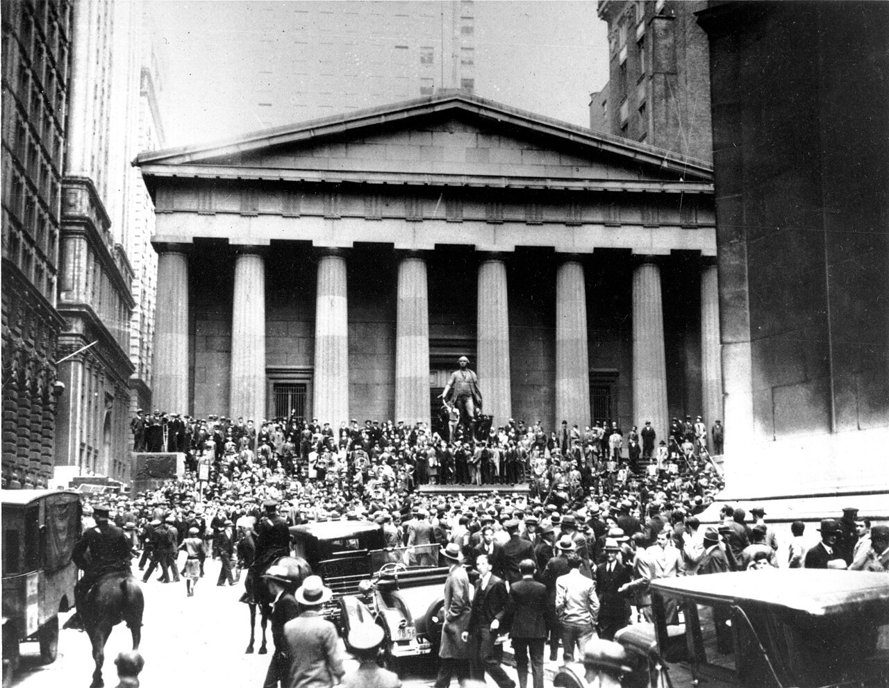
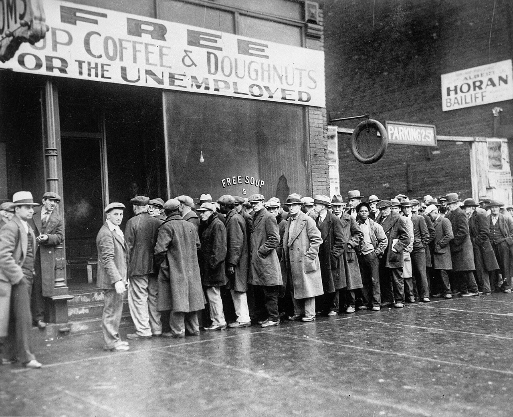
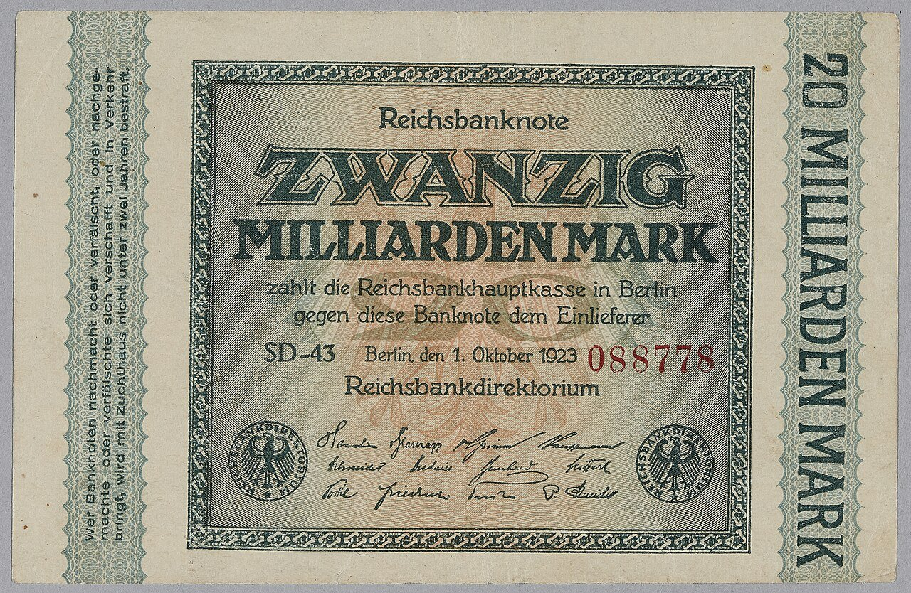
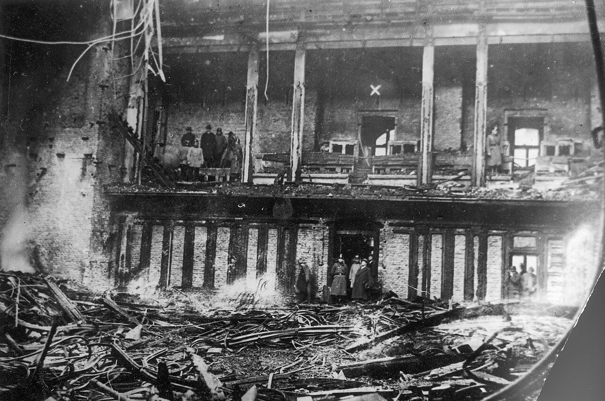
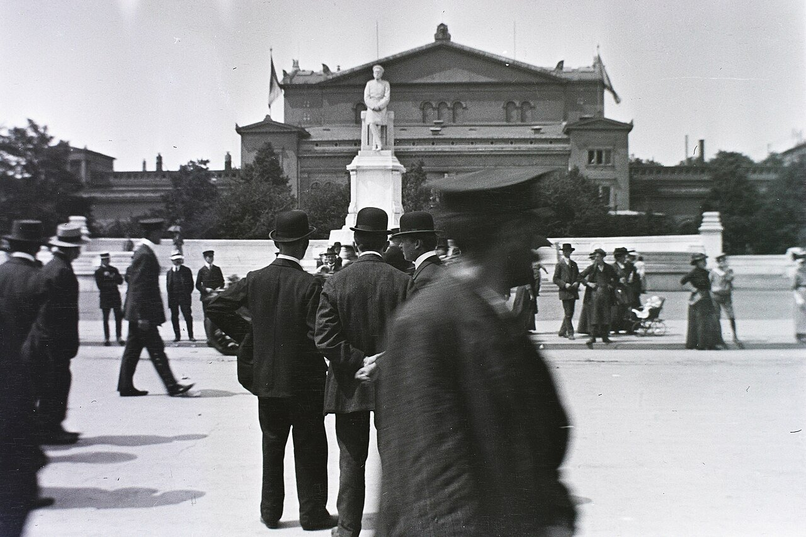
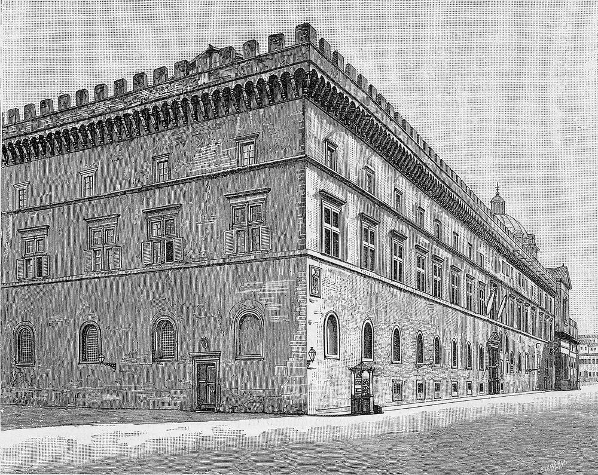

ニューヨーク、1929年10月24日。ウォール街の証券取引所で株が売られ続け、この日だけで1,290万株という記録的な取り引きがありました。扉の写真は、その日に取引所のまわりへ集まった人々です。29日にはさらに大きな暴落が起きました。
アメリカで始まった不景気は世界に広がり、「大恐慌」と呼ばれます。4年後の1933年、ドイツではヒトラーが政権をにぎって独裁を進めます。日本でも軍の力が強まり、イタリアではすでにムッソリーニの独裁が続いていました。大恐慌から、なぜ独裁者が生まれたのでしょうか。

1929年、ニューヨークで株が暴落しました。その4年後、ドイツでは選挙で伸びた党の党首が首相になり、2か月で議会から力を奪います。失業率と得票率のグラフ、日付の流れ図で、民主主義の中から独裁が生まれた道すじをたどってみませんか。
前回は第一次世界大戦の話でした。同盟と動員の計画が連鎖し、短いはずの戦争は4年3か月あまり続きました。ドイツ・ロシアなど4つの帝国が崩れ、1919年にはヴェルサイユで講和条約が結ばれます。ドイツは重い賠償を負い、ロシアには新しい体制の国が生まれました。
ニューヨーク、1929年10月24日。ウォール街の証券取引所で株が売られ続け、この日だけで1,290万株という記録的な取り引きがありました。扉の写真は、その日に取引所のまわりへ集まった人々です。29日にはさらに大きな暴落が起きました。
アメリカで始まった不景気は世界に広がり、「大恐慌」と呼ばれます。4年後の1933年、ドイツではヒトラーが政権をにぎって独裁を進めます。日本でも軍の力が強まり、イタリアではすでにムッソリーニの独裁が続いていました。大恐慌から、なぜ独裁者が生まれたのでしょうか。
不況に揺れる若い民主主義で、独裁者を扱えると読み違えた人々が門を開いたから。
1920年代のアメリカは好景気で、借金をして株を買う人も増えていました。暴落で損が広がると、預金が戻らなくなるのを恐れた人々が銀行に押しよせて引き出し、1933年までに約9,000の銀行がつぶれます。
職を失う人も増えました。当時は国が失業率を調べておらず、のちの推計では、1933年には働きたい人の4人に1人が仕事を失っていました（Fig.01）。

不況は海を渡ります。アメリカは1930年、輸入品に高い関税（外国の品にかける税）をかけ、ほかの国も関税を上げて対抗しました。イギリスは1932年、本国と植民地などのあいだで関税を下げ合う取り決めを結びます。仲間の国どうしで囲いこむ「ブロック経済」です。
大戦に敗れたドイツでは皇帝が退位し、1919年、女性も初めて投票した選挙で選ばれた議会が、新しい憲法を作りました。議会が開かれた町の名から、この国を「ヴァイマル共和国」と呼びます。
出だしから重荷がありました。1921年、戦勝国はドイツが払う賠償（戦争の損害のつぐない）を1,320億金マルクと決めます。1923年には物価が止まらずに上がり、11月には1ドルが4兆2,000億マルクあまりになりました。

1924年ごろからは、賠償の払い方を組み直す取り決め（ドーズ案）を機に、アメリカから流れこむお金で立ち直りつつありました。ところが恐慌でアメリカの銀行がそのお金を引き上げると、失業者が一気に増えます。
政党は失業保険の費用をめぐってまとまれず、1930年3月に内閣が倒れます。次の首相ブリューニングは、議会の多数ではなく、大統領の緊急令（憲法第48条が認めた非常の命令）で国を動かしました。
不満の受け皿になったのが、ヒトラーの率いるナチ党（国民社会主義ドイツ労働者党）です。1928年に2.6%だった得票率は、1932年7月に37.3%にはね上がり、議会の第一党になりました（Fig.02）。共産党も票を伸ばします。
ヒトラーはオーストリア生まれで、大戦ではドイツ軍の兵士でした。1923年、ミュンヘンで武力による政権の奪取に失敗して服役し、出所後は選挙で権力をめざす道に切りかえます。
1932年11月の選挙で、ナチ党は票を減らしました。それでも元首相パーペンら保守派（古い秩序を守りたい政治家や軍人）は、ヒトラーを首相にすえても自分たちで手なずけられると考えます。1933年1月30日、大統領ヒンデンブルクはヒトラーを首相に任命しました（Fig.03）。
2月27日の夜、国会議事堂が燃えます。ナチ党は共産党のしわざだと主張し、翌日の緊急令で言論や集会の自由を止めました。共産党の議員をはじめ、多くの人が逮捕されます。

3月5日の選挙でも、ナチ党は過半数に届きません。そこでヒトラーは、議会を通さずに政府が法律を作れる「全権委任法」を求めました。憲法を変える法律なので、3分の2の賛成が要ります。
3月23日、議会はクロル・オペラハウスで開かれました。共産党の議員は出られず、社会民主党にも逮捕や身を隠す議員が出る中、法律は賛成444、反対94で通ります。反対したのは社会民主党だけでした。

7月14日には、ナチ党のほかの政党が禁じられます。1934年8月にヒンデンブルクが亡くなると、ヒトラーは大統領と首相の地位を1つにし、「総統」として独裁を固めました。
迫害も始まります。1933年3月22日、ダッハウに強制収容所が開かれ、反対派の人々が送られました。1935年9月のニュルンベルク法は、ユダヤ人から市民としての権利を奪います。
ドイツだけではありません。イタリアでは1922年10月、ムッソリーニの率いるファシスト党（国家と指導者への服従を説く党）がローマへの行進で圧力をかけ、国王が彼を首相に任命しました。1925年ごろから独裁が固まります。

ソ連（1917年の革命のあとにでき、共産党だけが政権をにぎる国）では、1924年にレーニンが亡くなったあと、スターリンが独裁を固めました。1928年からは5か年計画で工業化を進めます。
日本では1931年、軍が満州事変を起こして中国東北部を占領します。翌1932年には首相の犬養毅が海軍の青年将校らに殺され、政党が内閣を作る時代が途切れました。
一方、アメリカでは1933年に大統領になったローズヴェルトが、ニューディール（新しい取り決め）と呼ばれる政策を始めます。国がダムなどの工事で人を雇い、失業者を支えました。批判はあっても、選挙と議会はそのまま続きます。
アメリカもドイツも、深い不況に苦しみました。それでもドイツが独裁に向かった理由として、歴史家はいくつかの要因をあげています。
失業と1923年の物価の記憶が、政治への不信を深めた。
共和国は生まれて10年あまり。議会がまとまれず、緊急令にたよった。
革命を恐れた経営者の一部が、ナチ党を支えた。
演説と宣伝で、不満の矛先を共産主義者やユダヤ人に向けた。
ヒトラーを利用できると考え、首相の座を渡した。
くらべると、不況そのものより、それを受け止める議会と選挙の強さが分かれ道だったという見方もできます。
1929年9月の最高値から1932年7月までに、ニューヨークの株価の指数（ダウ平均）が失った割合Wall Street crash of 1929（Wikipedia）による
1932年のドイツの失業者。1926年は約200万人だったWeimar Republic（Wikipedia）による
1933年の世界の貿易額。1929年の約3分の1に減ったGreat Depression（Wikipedia）による
全権委任法には、議会がのばさないかぎり4年で効力を失う、という期限がついていました。形の上では、非常のときにかぎった仮の法律だったわけです。
けれども期限は1937年と1939年にのばされ、1943年にはヒトラーの命令で、事実上、戦争のあいだ続くことになりました。「しばらくのあいだ」の約束が、独裁の土台であり続けたのです。
どの国のニュースでも、「緊急事態」や「特別な権限」と聞いたら、それがいつまでの約束で、だれが終わらせられるのかに目を向けてみてください。
ドイツは1935年に再軍備を宣言し、1936年には、軍を置かない約束だったフランス国境近くのラインラントに兵を進めます。アジアでは、満州を手にした日本が中国でさらに兵を動かしていきました。ヨーロッパとアジアで火種がふくらむ中、第二次世界大戦は、なぜ世界中に広がったのでしょうか。